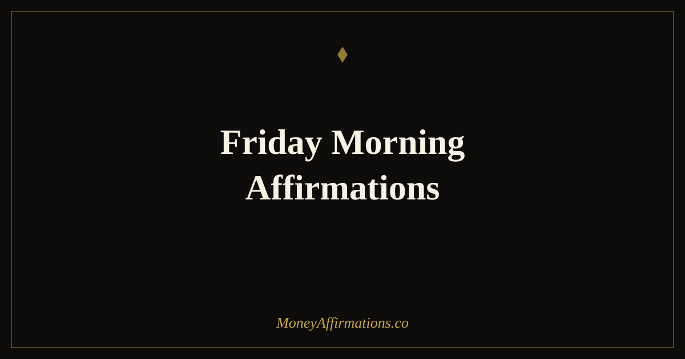

Friday Morning Affirmations: 25 Statements to End the Week Strong

Friday morning is not simply the end of the week — it is the last chance to make the week count. For most people, Friday carries a mental orientation of countdown and relief: get through the day, reach the weekend, switch off. That orientation is understandable, but it means Friday's financial hours — the follow-ups sent, the decisions made, the opportunities either acted on or left — are often the weakest of the week, managed from a mindset of escape rather than completion.
Friday morning affirmations for money are designed to change that. These 25 statements reframe the day as a completion rather than a countdown — a chance to close the week as the financially capable, intentional person you set out to be on Monday. Used in the first few minutes of the morning, they create a final weekly anchor that affects both the day's financial decisions and the ease with which the weekend can be genuinely restful rather than merely escapist.
What are Friday morning affirmations?
Friday morning affirmations are present-tense statements used at the start of the final working day to deliberately shape how the week closes. For money and financial mindset, they serve three purposes simultaneously: they affirm the week's progress (building the evidence base for ongoing belief), they set a clear intention for the day's remaining financial actions, and they create a psychological bridge between the week's effort and a genuinely earned, guilt-free rest.
What distinguishes them from general Friday affirmations is their specific focus on completion and financial identity. They address the particular risk of Friday — the temptation to coast, to defer outstanding money tasks to next week, and to disconnect from financial goals before the week is truly closed. Friday morning affirmations hold the financial thread one final time, ensuring the week ends with the same intentionality with which it began. Pair them with the Friday affirmations for money collection for the complete Friday practice.
25 Friday morning affirmations
- I close this week as the financially capable, intentional person I am becoming.
- Today I complete what I started and I do it with the same focus I brought Monday.
- I am proud of the financial progress I have made this week, however measured.
- Friday morning is my final opportunity to finish this week strong — and I take it.
- I follow through on outstanding financial tasks today with clarity and confidence.
- This week I moved closer to my financial goals, and I end it knowing that.
- I release the impulse to coast and I show up fully for the final hours of this week.
- The money I earn, save, and grow this week matters — and Friday is still part of it.
- I arrive at the weekend having honoured my financial commitments to myself.
- Every completed financial task this Friday is a gift to my Monday morning self.
- I am grateful for this week's work and I close it with satisfaction and grace.
- My financial life is better today than it was last Friday — I see and acknowledge that.
- I choose to end this week from abundance, not from relief at its being over.
- I send the invoice, follow up on the payment, and close the financial loops today.
- This Friday morning I give myself permission to finish well before I rest fully.
- I celebrate the wins from this week, small and large, with genuine appreciation.
- My consistent effort this week deserves to be recognised — by me, first.
- I approach this final day of the week with energy, intention, and financial purpose.
- I carry the week's financial momentum into the weekend and into next week's beginning.
- Friday morning confirms what I already know: I am building something real and lasting.
- I transition into the weekend as someone who has earned it through aligned action.
- My rest this weekend will be genuine because I am finishing the week without loose ends.
- I am grateful for five days of opportunity, growth, and financial forward movement.
- Today I act as someone who completes things — because that is exactly who I am.
- This Friday I close the week with confidence, with gratitude, and with a clear financial mind.
How to use these affirmations
Use Friday morning affirmations as a two-part practice: a brief reading session followed by a written completion list. Choose four affirmations and say them aloud before opening your first communication of the day — email, messages, or calendar. The specific Friday context is important here: the affirmations are most effective when they are directly followed by naming the one or two outstanding financial actions you will complete before the week ends. That might be chasing an invoice, moving money to savings, making a decision you have been postponing, or simply reviewing this week's finances clearly.
The second part is an evening close, done at the actual end of the workday: write one sentence naming what you did financially this week that you are genuinely proud of. One sentence, specific, true. This weekly close is one of the most consistently underused practices in financial mindset work. People who regularly acknowledge their own financial competence — even modestly, even briefly — build the kind of self-efficacy that makes the next week's effort more natural. The Friday evening sentence becomes, over time, a running record of your financial growth that is both motivating and stabilising.
How closing the week well affects the week that follows
The Zeigarnik effect — named for psychologist Bluma Zeigarnik — describes the brain's tendency to keep incomplete tasks in active memory, creating a background cognitive load that persists until the task is resolved. In financial terms, this means every unpaid invoice, deferred budget review, or avoided money conversation that ends the week unresolved takes up mental space over the weekend, degrading rest and increasing the anxiety that Monday is met with.
Friday morning affirmations create the psychological conditions for genuine completion. When you start the day affirming "I close financial loops today and arrive at the weekend with a clear mind," you are priming the brain to prioritise exactly that. The tasks get done — not because the affirmation magically produces action, but because naming the completion as your intention makes the non-completion feel like a violation of your own stated values. The Zeigarnik effect is reversed: instead of accumulating unresolved tasks, you arrive at Saturday with a genuinely clear cognitive slate. That clarity is not just pleasant — research on cognitive restoration shows that people who experience genuinely unencumbered weekend rest make measurably better decisions the following week. Your Friday morning practice is, in this sense, an investment in next Monday.
Tips to make them work faster
- Name your one financial task before you begin. Friday's most important money move — whatever you have been deferring — should be written down before your affirmation session begins. Pair the affirmation with the action immediately after.
- Use them before opening communications. Friday is high-risk for reactive mode. Affirmations before email means you engage the day from your own financial orientation, not from what has arrived in your inbox.
- Write one weekly financial win at day's end. Specific, honest, brief. This is the most underused habit in financial mindset work and one of the most compounding over time.
- Choose affirmations about completion, not just positivity. "I follow through on outstanding financial tasks today" is more directionally useful on a Friday than "I am abundant." Both are true — one creates movement.
- Protect the last thirty minutes of the workday. Use Friday afternoon for financial close-out tasks: review, follow-up, send. The affirmations in the morning make this natural rather than effortful.
Frequently Asked Questions
What makes Friday morning a good time for financial affirmations?
Friday morning is the last opportunity to finish the week as the financially intentional person you set out to be on Monday. It combines completion energy with the anticipation of rest, creating a reflective state that is genuinely useful for financial thinking. Used well, Friday morning affirmations close the loop on the week's financial story and prevent the weekend's spending decisions from being made from exhaustion rather than intention.
How do Friday morning affirmations differ from Friday night affirmations?
Friday morning affirmations are oriented toward completion and the remaining hours of the working week — they help you finish strong, follow through on outstanding financial tasks, and arrive at the weekend with a sense of accomplishment. Friday evening affirmations shift toward rest, gratitude, and release. Both have value; morning affirmations have a more direct effect on financial behaviour because they are used before the day's final decisions are made.
Should I use the same affirmations every Friday or rotate them?
Rotate them every two to four weeks, choosing ones that reflect your current growth edge. When a statement feels completely comfortable — no resistance, no stretch — the belief has likely been absorbed. Move to a statement that creates a slightly larger reach. Keeping a core set of three to five that feel relevant right now, and swapping one out each month, maintains the balance between consistency and challenge that produces the most sustained change.
For a complete set of statements to carry your prosperity intentions through every part of the week, explore the full prosperity affirmations collection and build a daily practice that makes financial confidence the foundation of your whole life, not just your Mondays.